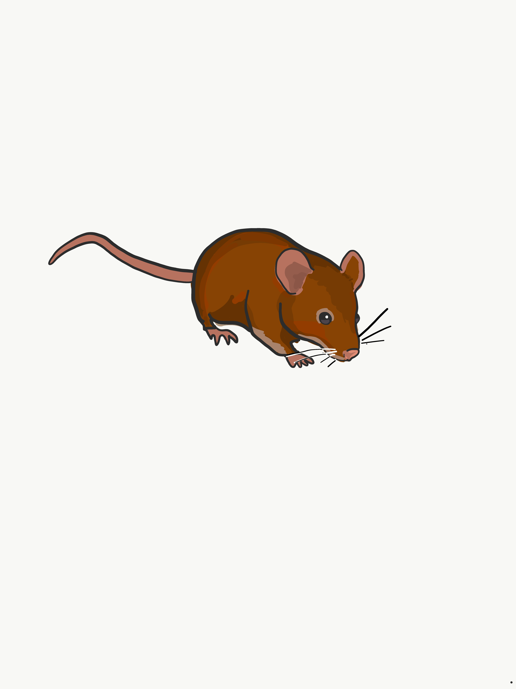

Until then, you can follow me on Twitter and view my publications here

I am an evolutionary biologist
I am currently a postdoc in Nathan Clark's lab at the Universit of Utah. I did my Ph.D. with Jeff Good at the University of Montana and worked in Matt Dean's lab at the University of Southern California as an undergraduate and master's student.